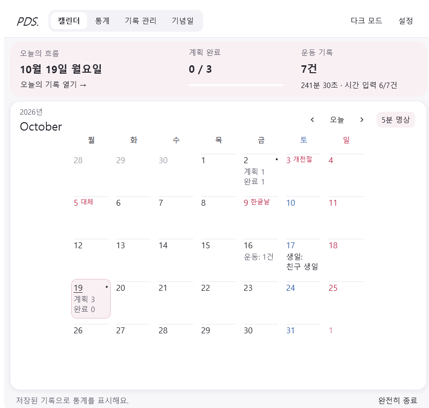
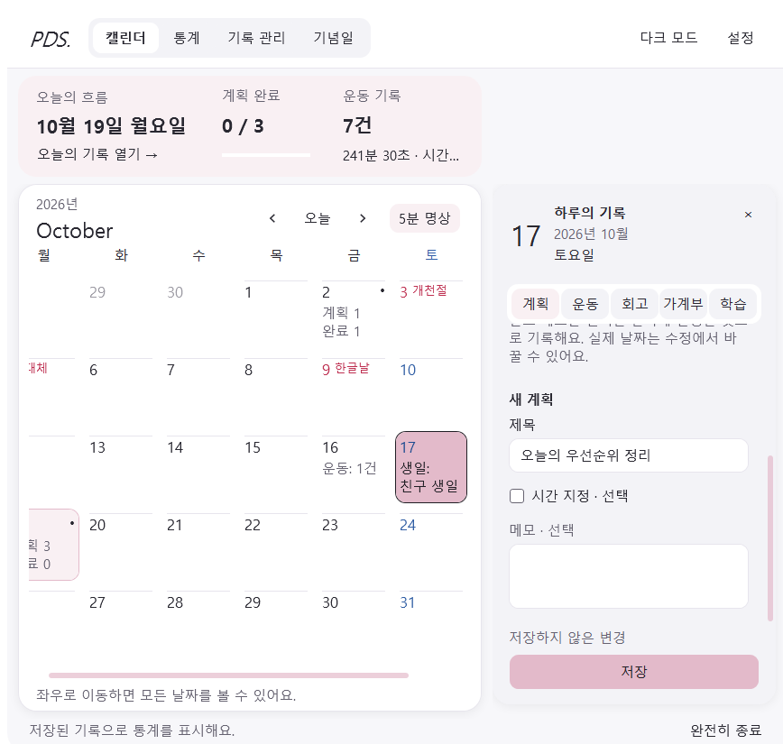
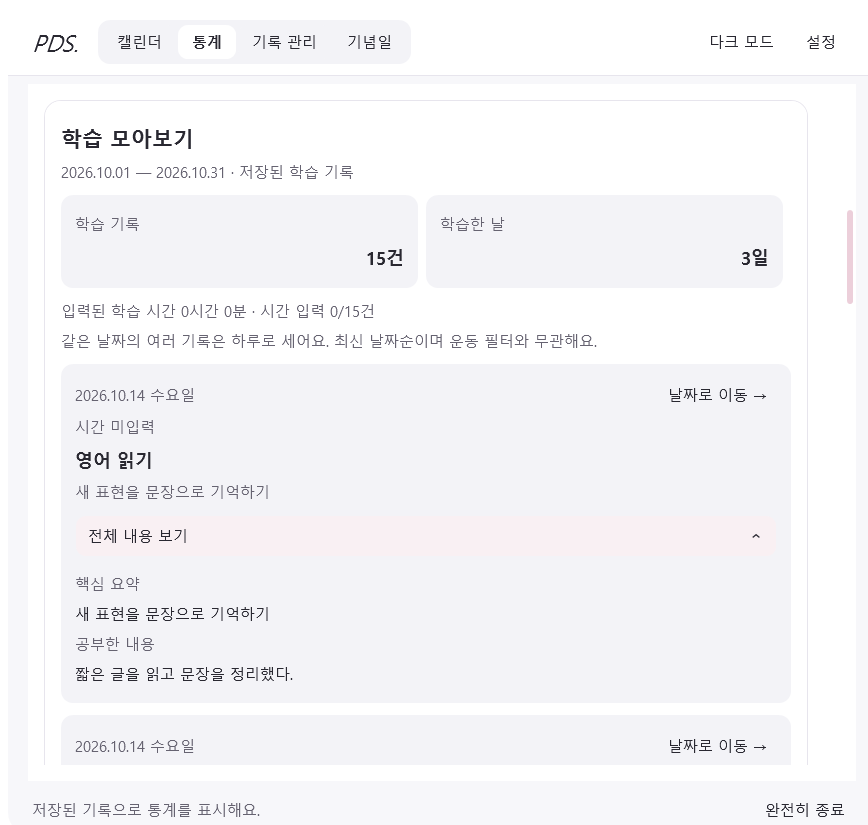
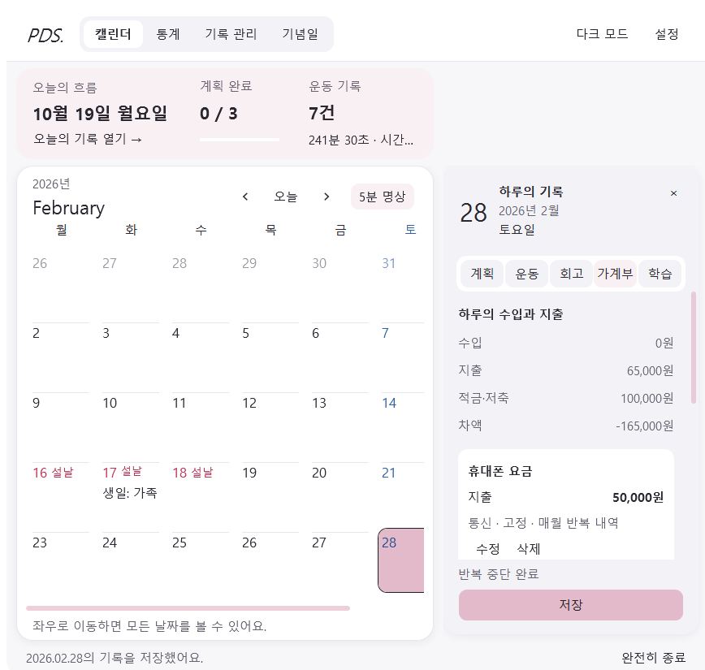
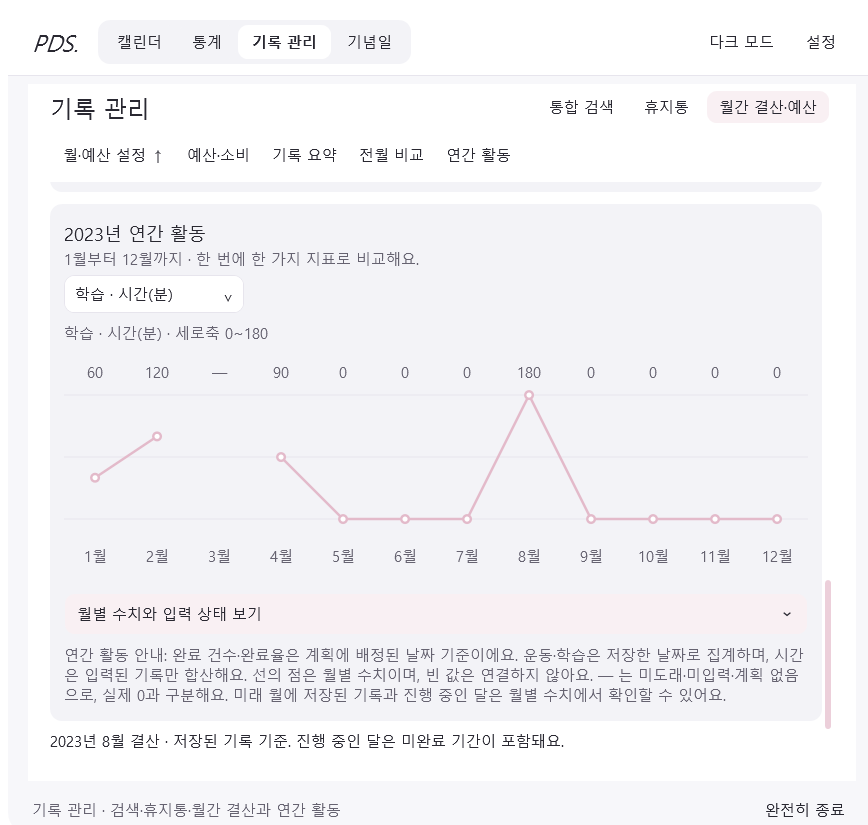
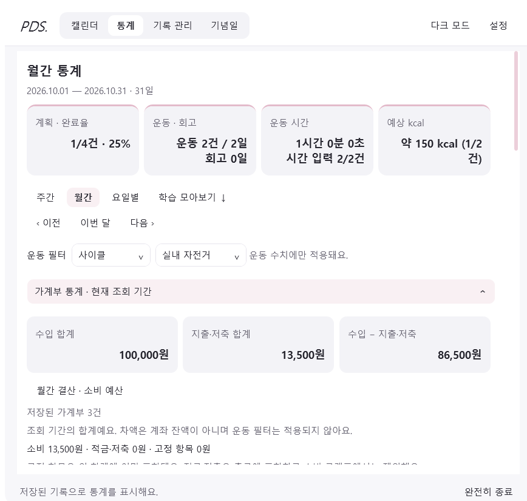
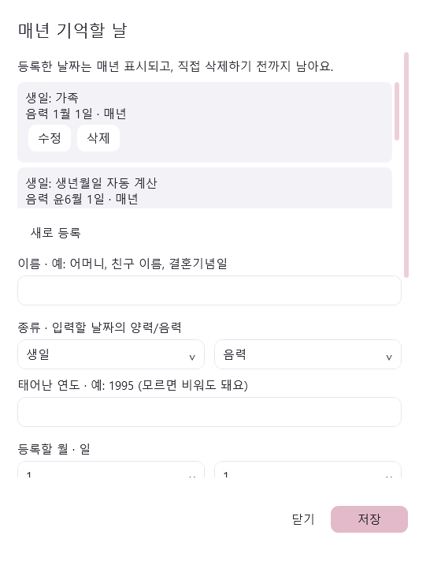
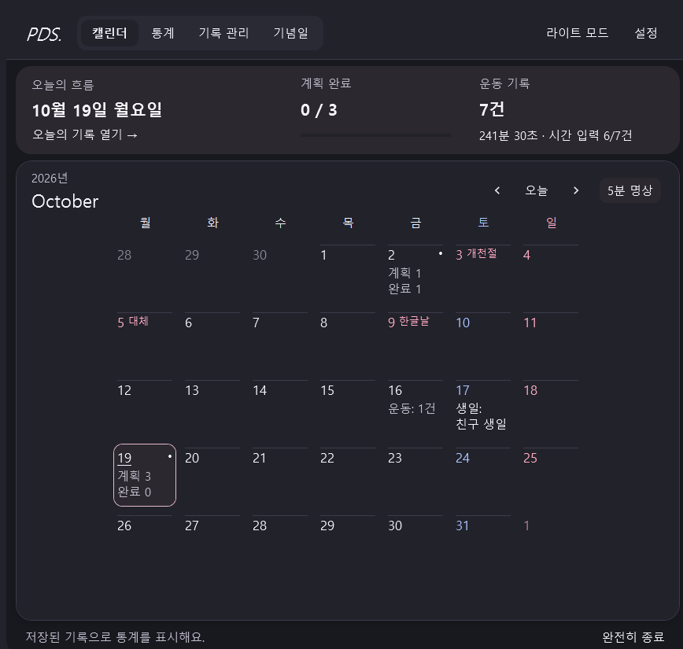

달력과 오늘의 흐름

날짜별 계획·완료·운동을 확인하고 오른쪽에서 기록합니다.
2026.10.19 실제 캡처 · 개인 기록이 아닌 시험 데이터
아래는 실제 Windows 앱을 시험 데이터로 확인한 화면입니다. 브라우저에서 기록을 입력하는 웹 앱이 아니며, Windows 앱의 개인 기록과 연결되지 않습니다.

날짜별 계획·완료·운동을 확인하고 오른쪽에서 기록합니다.
2026.10.19 실제 캡처 · 개인 기록이 아닌 시험 데이터

제목·시간·메모·완료 상태를 저장합니다. 미완료 계획만 23시에 이월합니다.
2026.10.19 실제 캡처 · 개인 기록이 아닌 시험 데이터

제목·내용·직접 요약·소요 시간과 첨부 자료를 함께 보관합니다.
2026.10.19 실제 캡처 · 개인 기록이 아닌 시험 데이터

수입·지출·적금·저축을 구분하고 지정일에 정기 내역을 반영합니다.
2026.10.19 실제 캡처 · 개인 기록이 아닌 시험 데이터

검색·휴지통·월간 결산과 12개월 선 그래프를 앱 안에서 확인합니다. 2023년 가상 학습 기록 · 시험 데이터.
2026.10.19 실제 캡처 · 개인 기록이 아닌 시험 데이터

주간·월간·요일별로 계획과 운동을 확인하고 학습·금전 집계도 돌아봅니다.
2026.10.19 실제 캡처 · 개인 기록이 아닌 시험 데이터

양력·음력 생일과 기일을 반복 표시합니다. 한국 공휴일 자료는 2025~2027년입니다.
2026.10.19 실제 캡처 · 개인 기록이 아닌 시험 데이터

라이트·다크와 사용자가 고른 강조색을 지원합니다.
2026.10.19 실제 캡처 · 개인 기록이 아닌 시험 데이터
실제 저장·통계·트레이 기능은 Windows 앱에서 확인하세요.
Windows 실행 ZIP 받기